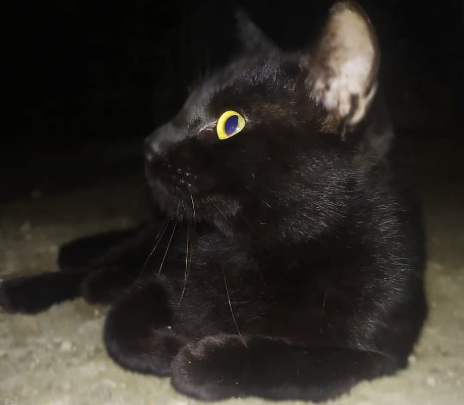

Hi, my name is JOven Cezar and my main hobbies is playing online games, basketball and I like watching movies or anime and since during this pandemic I always wake up at 11 am in the morning that I became addicted to coffee and that is the reason why i can't sleep earlier, but i'm taking this is advantages as IT. One of my dream is to have a PC gaming setup and especilly I can use for my programming and schoolwork.
My cat are very cute, and his name is kittoy they are also really great pet as they know how to take care of themselves and don’t need much help from their humans. I like cats because they know how to clean up after themselves and also to survive without much help from their humans. This is why they make the perfect pet because they can care for themselves. However, they still make themselves cozy and comfortable.
